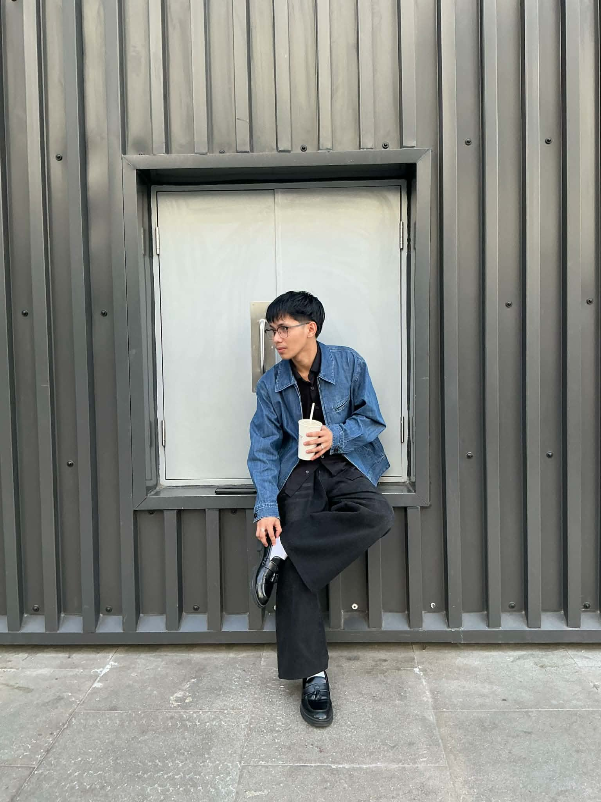

Parqal Mall

Parqal Mall stands out for its clean, modern architecture — sharp lines, minimal color palette, and a lot of negative space that makes it perfect for editorial-style shots. Instead of the usual busy mall backdrop, you get walls, corridors, and structural elements that feel more like a design magazine spread than a shopping center.
I usually shoot here on weekday mornings, when foot traffic is low and you can actually use the space without people wandering into frame. If you're going for a minimalist, high-fashion look, this is one of the few spots in Pasig that delivers that without much effort.
| Detail | Info |
|---|---|
| Address | Ortigas Ave Ext, Pasig City |
| Opening hours | 10 AM–9 PM daily |
| Price range | Free (mall entry) |
| Best time to visit | Weekday mornings, low foot traffic |